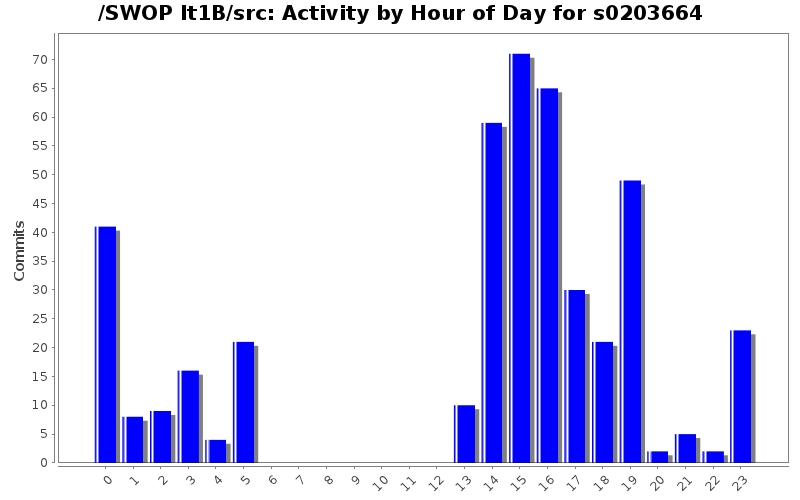
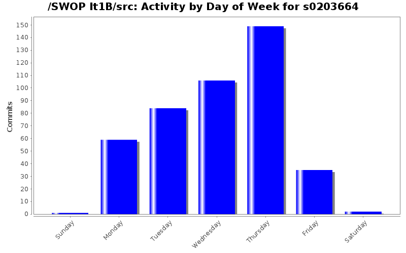
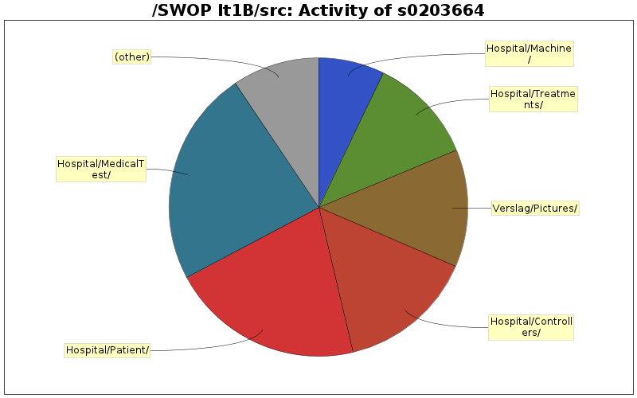

| Directory | Changes | Lines of Code | Lines per Change |
|---|---|---|---|
| Totals | 436 (100.0%) | 3181 (100.0%) | 7.2 |
| Hospital/MedicalTest/ | 27 (6.2%) | 746 (23.5%) | 27.6 |
| Hospital/Patient/ | 30 (6.9%) | 663 (20.8%) | 22.1 |
| Hospital/Controllers/ | 84 (19.3%) | 472 (14.8%) | 5.6 |
| Verslag/Pictures/ | 6 (1.4%) | 404 (12.7%) | 67.3 |
| Hospital/Treatments/ | 27 (6.2%) | 369 (11.6%) | 13.6 |
| Hospital/Machine/ | 22 (5.0%) | 228 (7.2%) | 10.3 |
| Hospital/WareHouse/ | 37 (8.5%) | 70 (2.2%) | 1.8 |
| Hospital/People/PeopleFactories/ | 3 (0.7%) | 62 (1.9%) | 20.6 |
| Hospital/Exception/ | 9 (2.1%) | 53 (1.7%) | 5.8 |
| Hospital/Argument/ | 9 (2.1%) | 50 (1.6%) | 5.5 |
| Hospital/People/ | 19 (4.4%) | 48 (1.5%) | 2.5 |
| Verslag/ | 17 (3.9%) | 16 (0.5%) | 0.9 |
| HospitalUI/WareHouseUI/ | 7 (1.6%) | 0 (0.0%) | 0.0 |
| HospitalUI/NurseUI/ | 11 (2.5%) | 0 (0.0%) | 0.0 |
| HospitalUI/MainUI/ | 8 (1.8%) | 0 (0.0%) | 0.0 |
| HospitalUI/DoctorUI/ | 39 (8.9%) | 0 (0.0%) | 0.0 |
| HospitalUI/AdminUI/ | 15 (3.4%) | 0 (0.0%) | 0.0 |
| HospitalUI/ | 12 (2.8%) | 0 (0.0%) | 0.0 |
| Hospital/World/ | 32 (7.3%) | 0 (0.0%) | 0.0 |
| Hospital/WareHouse/OrderPlacers/ | 3 (0.7%) | 0 (0.0%) | 0.0 |
| Hospital/Schedules/ | 6 (1.4%) | 0 (0.0%) | 0.0 |
| Hospital/Factory/ | 1 (0.2%) | 0 (0.0%) | 0.0 |
| Hospital/Diagnosis/ | 7 (1.6%) | 0 (0.0%) | 0.0 |
| Hospital/ | 2 (0.5%) | 0 (0.0%) | 0.0 |
| / | 3 (0.7%) | 0 (0.0%) | 0.0 |

verslag
0 lines of code changed in 1 file:
verslag update
0 lines of code changed in 1 file:
add staff & add equipment
0 lines of code changed in 13 files:
scenario test
0 lines of code changed in 1 file:
werkverdeling Jeroen Van Gool (toe te voegen bij finale pdf)
0 lines of code changed in 1 file:
usecase list orders (toevoegen aan verslag!)
viel niet echt veel over te melden :p
0 lines of code changed in 1 file:
administration => toevoegen!
todo: advance time
0 lines of code changed in 1 file:
opmerking over grasp patterns
0 lines of code changed in 1 file:
Verdeling!
16 lines of code changed in 2 files:
.svg convertion
404 lines of code changed in 2 files:
medicaltests & treatments verslag
0 lines of code changed in 9 files:
undo/redo sysouts gefixt
0 lines of code changed in 11 files:
medicaltestcommand implementeert nu Command, dus kan undo/redo
0 lines of code changed in 2 files:
diagnosis fix
0 lines of code changed in 1 file:
all tests working again!
0 lines of code changed in 1 file:
medication update
0 lines of code changed in 3 files:
diagnosis fix (unschedule weggedaan)
0 lines of code changed in 3 files:
commandinfos in doctor bijgehouden ipv in doctorcontroller, hierdoor kan je na een logout nog steeds dingen undo/redo'en
0 lines of code changed in 2 files:
diagnosiscommand.toestring toegevoegd + verslag
0 lines of code changed in 2 files:
warehouse fix
0 lines of code changed in 4 files:
(77 more)